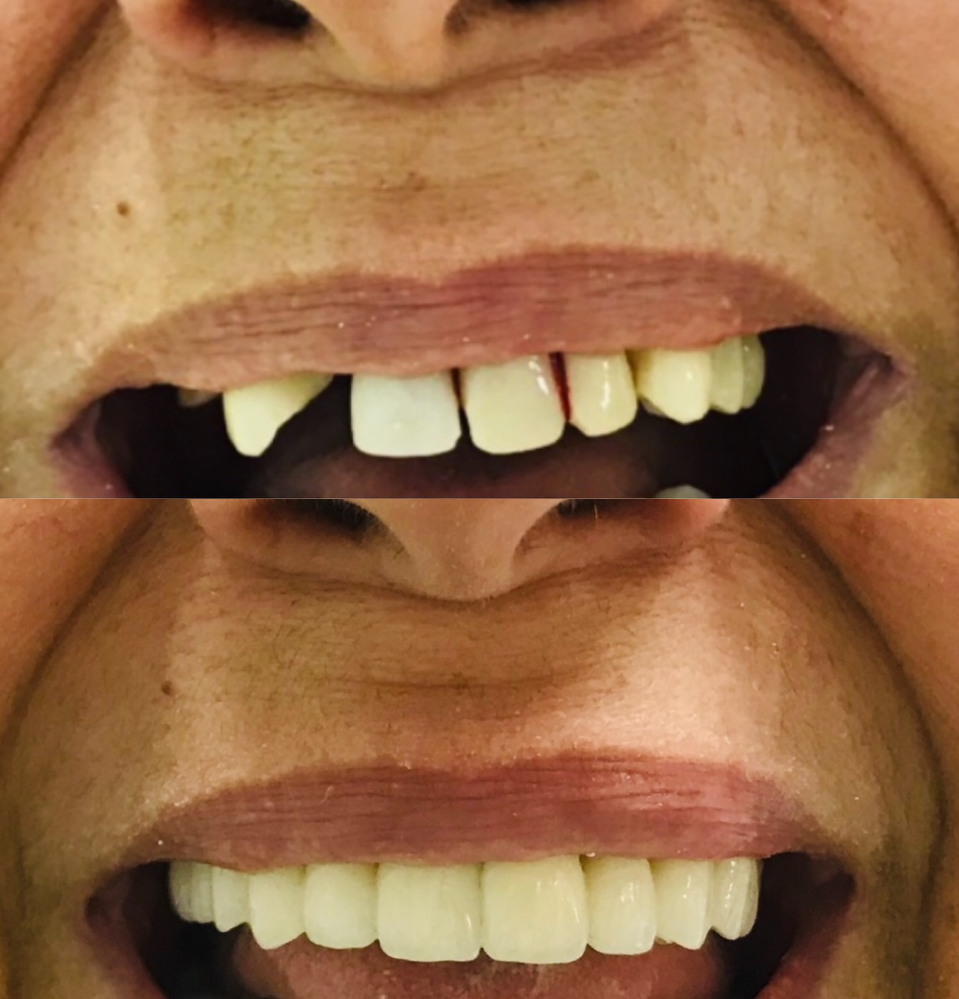
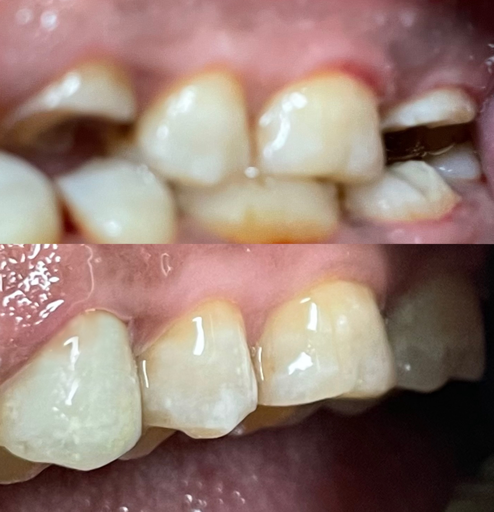
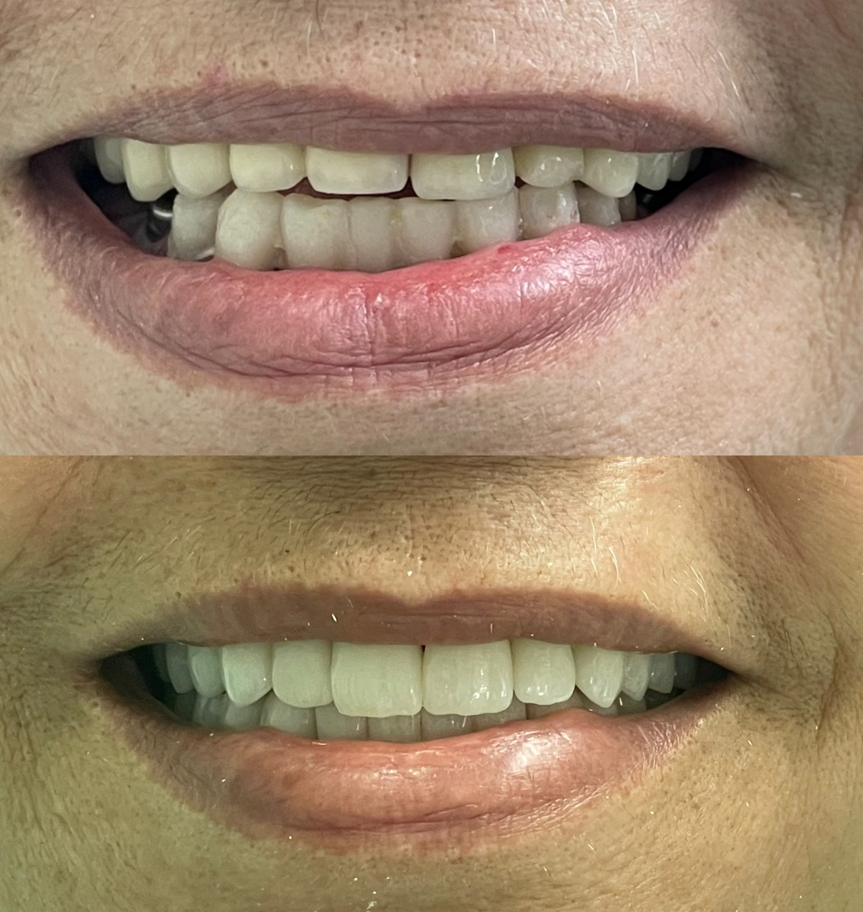
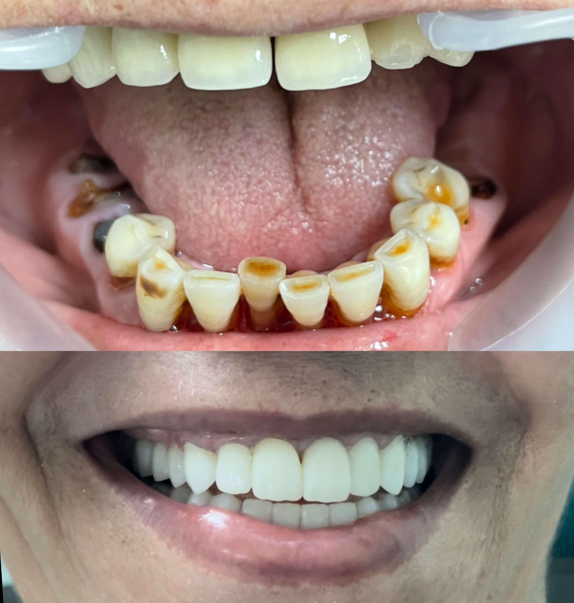
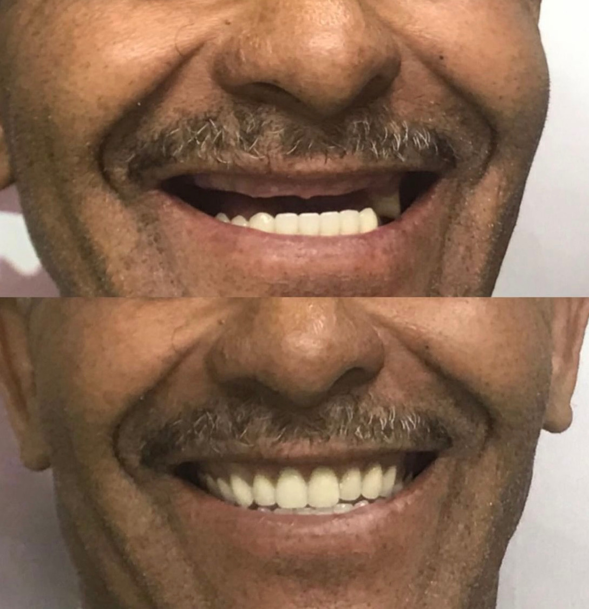
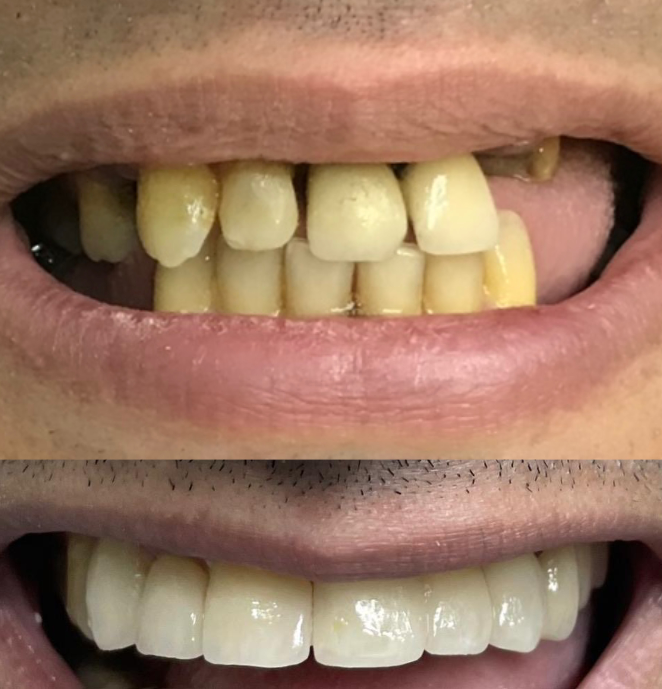

Prothèses Dentaires à Rabat — Couronnes, Bridges & Zircone
Une dent très abîmée se sauve plutôt qu'elle ne s'arrache. Couronnes en céramique ou zircone, bridges, prothèses amovibles : nous restaurons la forme, la fonction et l'esthétique de vos dents avec des matériaux qui tiennent dans le temps.
- 20 ans d'expérience
- Empreinte numérique 3D
- Zircone & céramique
- Devis gratuit en consultation
Qu'est-ce qu'une prothèse dentaire ?
Une prothèse dentaire remplace ou recouvre une dent abîmée ou absente, afin de restaurer à la fois la mastication, l'esthétique et l'équilibre de votre bouche. Selon la situation, elle peut être fixe — couronne, bridge — ou amovible, c'est-à-dire retirée par le patient pour l'entretien.
La couronne est une coiffe qui recouvre entièrement une dent trop délabrée pour être simplement obturée : dent très cariée, fracturée, ou dévitalisée et devenue fragile. Elle protège ce qu'il reste de la dent tout en lui rendant sa forme et sa teinte d'origine. C'est la solution qui permet de conserver sa dent naturelle plutôt que de l'extraire.
Le bridge, littéralement « pont », remplace une ou plusieurs dents manquantes en prenant appui sur les dents voisines, qui sont préparées pour recevoir l'ensemble. Il présente l'avantage d'être fixe et rapide à mettre en place. Sa limite : il nécessite de tailler les dents adjacentes, même si elles sont saines, et n'empêche pas la résorption de l'os sous la dent absente — contrairement à l'implant.
Les prothèses amovibles, partielles ou complètes, remplacent plusieurs dents lorsqu'une solution fixe n'est pas envisageable ou souhaitée. Les techniques actuelles offrent des appareils bien plus discrets et confortables que ceux d'autrefois, avec des crochets invisibles et des bases souples.
Le choix du matériau est déterminant. La zircone est une céramique haute performance d'une résistance mécanique remarquable, idéale pour les dents postérieures très sollicitées comme pour les bridges de grande portée. La céramique feldspathique ou pressée offre quant à elle une translucidité supérieure, ce qui la rend particulièrement adaptée aux dents de devant. Le céramo-métallique, plus classique, reste une option robuste et économique. Nous vous orientons selon la dent concernée, les contraintes de mastication et vos attentes esthétiques.
Toutes nos prothèses sont réalisées à partir d'empreintes numériques 3D. Fini la pâte inconfortable : un scanner intra-oral relève la forme exacte de vos dents en quelques minutes. La précision d'ajustage s'en trouve nettement améliorée, ce qui se traduit par un meilleur confort et une plus grande longévité de la prothèse.
Nos solutions prothétiques
- Couronnes céramique et zircone pour sauver une dent très abîmée
- Bridges fixes pour remplacer une ou plusieurs dents manquantes
- Prothèses amovibles partielles ou complètes, discrètes et confortables
- Couronnes sur implants pour une restauration sans toucher aux dents voisines
- Empreinte numérique 3D : plus de précision, plus de confort
- Teinte relevée sur vos dents naturelles pour un rendu invisible
Comment ça se passe ?
-
Consultation & bilan (200 Dhs)
Examen clinique et radiographies pour déterminer la solution la plus adaptée. Devis détaillé remis le jour même.
-
Préparation de la dent
Sous anesthésie locale, la dent est préparée pour recevoir la prothèse. Une prothèse provisoire est posée immédiatement.
-
Empreinte numérique 3D
Un scanner intra-oral relève la forme exacte de vos dents, sans pâte ni inconfort.
-
Fabrication au laboratoire
Votre prothèse est réalisée sur mesure, dans le matériau et la teinte choisis. Comptez généralement une à deux semaines.
-
Pose définitive
Essayage, contrôle de la teinte et de l'occlusion, puis scellement définitif. Ajustements réalisés sur place si nécessaire.
Tarifs
Tarifs prothèses dentaires à Rabat
Le tarif varie selon le matériau choisi et la complexité du cas. Devis remis en consultation.
-
Le plus demandé
Prothèse — tarif de base
4 000 Dhs
l'unité
Tarif de référence pour une couronne ou un élément prothétique. Variable selon le matériau et la complexité.
-
Couronne zircone
Sur devis
à partir de 4 000 Dhs
Résistance mécanique maximale : le choix idéal pour les dents postérieures et les bridges de grande portée.
-
Couronne céramique
Sur devis
à partir de 4 000 Dhs
Translucidité proche de l'émail naturel : particulièrement indiquée sur les dents visibles.
-
Bridge
Sur devis
selon le nombre d'éléments
Remplace une ou plusieurs dents en prenant appui sur les dents voisines. Chiffré élément par élément.
-
Prothèse amovible
Sur devis
partielle ou complète
Solution amovible, partielle ou complète, avec des matériaux discrets et confortables.
-
Consultation & devis
200 Dhs
bilan et radiographies
Examen complet et plan de traitement chiffré remis le jour même.
Tarifs indicatifs, susceptibles d'évoluer à la hausse comme à la baisse selon la complexité de votre cas. La consultation coûte 200 Dhs et votre devis personnalisé y est établi et remis. Des facilités de paiement sont possibles.
Nos Avant-Après
Résultats avant / après
Des restaurations prothétiques réalisées au cabinet du Dr Khamlich.









FAQ
Questions fréquentes
-
Une couronne recouvre une seule dent, toujours présente en bouche mais trop abîmée pour être simplement obturée : elle la protège et lui rend sa forme. Un bridge, lui, remplace une ou plusieurs dents absentes en s'appuyant sur les dents voisines, qui sont préparées pour porter l'ensemble. En résumé : la couronne sauve une dent existante, le bridge comble un vide laissé par une dent perdue.
-
Ni meilleure ni moins bonne : elles ont des points forts différents. La zircone est nettement plus résistante mécaniquement, ce qui en fait le choix privilégié pour les molaires soumises à de fortes pressions et pour les bridges de grande portée. La céramique feldspathique ou pressée offre en revanche une translucidité supérieure, plus proche de l'émail naturel, ce qui la rend idéale sur les dents de devant. Le choix se fait donc selon la dent concernée : nous privilégions souvent la zircone à l'arrière et la céramique à l'avant.
-
Comptez généralement une à deux semaines entre la prise d'empreinte et la pose définitive, le temps que le laboratoire réalise votre prothèse sur mesure. Vous n'êtes jamais laissé sans dent pendant cette période : une prothèse provisoire est posée dès la séance de préparation, assurant à la fois l'esthétique et la mastication. Les cas complexes, notamment les bridges de grande étendue, peuvent demander un délai un peu plus long.
-
Non. La préparation de la dent se fait sous anesthésie locale : vous ne ressentez rien pendant la séance. Dans les jours qui suivent, une sensibilité passagère au chaud et au froid est possible, surtout si la dent est encore vivante — elle s'estompe spontanément. La pose définitive, elle, est indolore et ne nécessite généralement pas d'anesthésie.
-
En moyenne 10 à 15 ans, et souvent davantage lorsque l'hygiène est rigoureuse. Le point critique n'est pas le bridge lui-même mais les dents piliers qui le supportent : si une carie se développe sous un pilier, c'est tout l'ensemble qui doit être refait. D'où l'importance du brossage sous les intermédiaires du bridge — nous vous montrons la technique avec des brossettes adaptées — et des contrôles réguliers.
-
Oui, c'est la contrainte principale du bridge : les deux dents encadrant l'espace doivent être préparées pour recevoir les couronnes d'ancrage, même si elles sont parfaitement saines. C'est précisément l'avantage de l'implant, qui remplace la dent manquante sans toucher aux voisines. Si vos dents adjacentes sont intactes, nous vous présentons honnêtement les deux options afin que vous puissiez décider en connaissance de cause.
-
Pour une couronne ou un bridge fixe, l'entretien est celui de dents naturelles : brossage deux fois par jour, fil dentaire ou brossettes interdentaires, et un soin particulier au niveau du collet, là où la prothèse rejoint la gencive. Les brossettes sont indispensables sous les intermédiaires d'un bridge. Pour une prothèse amovible, elle se retire et se brosse après chaque repas, et se conserve dans un récipient adapté la nuit. Un détartrage annuel au cabinet complète l'entretien.
-
Non, si le travail est bien réalisé. La teinte est relevée sur vos dents naturelles à l'aide d'un nuancier, et la forme est adaptée à votre sourire. La céramique et la zircone modernes reproduisent fidèlement l'aspect de l'émail, y compris sa translucidité. Sur les dents de devant, nous portons une attention particulière au choix du matériau et à la ligne de gencive pour un rendu indiscernable.
Réservation en ligne
Prendre rendez-vous pour votre prothèse
Réservez directement en ligne, sans quitter le site.
Un souci avec le formulaire ? Appelez-nous directement au 06 11 38 11 11.
Nous trouver
Clinique Dentaire Arribat — Rabat Agdal
2 Rue Oued Souss, Agdal, Rabat — Ouvrir dans Google Maps →
Infos pratiques
-
Adresse
2 Rue Oued Souss, Agdal, Rabat, Maroc -
Téléphone
+212 6 11 38 11 11 -
Horaires
Lundi – Vendredi : 9h00 – 18h00
Samedi : 9h00 – 13h00 -
Itinéraire
Obtenir l'itinéraire -
WhatsApp
Nous écrire sur WhatsApp